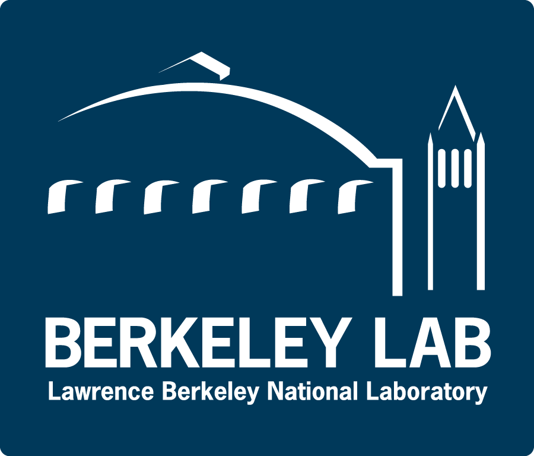
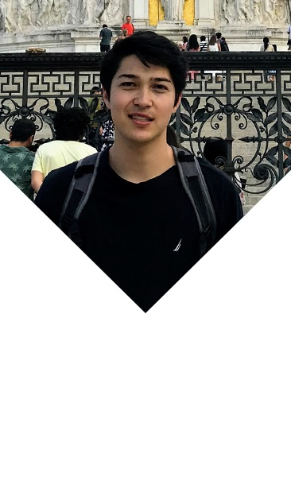

Assisting with the 50th Anniversary of the Birth of the Internet,
with industry leaders such as
Eric Schmidt, Mark Cuban, Henry Samueli,
Jameela Jamil, Vint Cerf, Patrisse Cullors, Jamie Dimon,
Ashton Kutcher, and Peter Thiel
Designing and publishing digital media content via UCLA's Engineering
Facebook page, Instagram, and Twitter.
Bruin Entrepreneurs
Director
Feb. 2019 - Present
Directing Bruin Entrepreneur's annual 1000 Pitches event, a four-week long campaign
across UCLA’s campus, with the goal of fostering an entrepreneurial
mindset and encouraging every student to think outside the box.
This event will take place in Fall Quarter 2019.
Assist in the development of digital media, including the main
website, and our
designathon
site.
Lead weekly night meetings to general members, discussing entrepreneurial
related topics.

Berkeley Labs
Software Engineering Intern
July 2019 - Aug. 2019
Assistant to Dr. Daniel Dwyer, on the Deep Underground Neutrino Experiment (DUNE)
Co-developed a baseline algorithm with >98% accuracy, which clustered 3D voxels of simulated neutrino events using a first pass density-based noise reduction algorithm (DBSCAN) followed by PCA and basic thresholding
iBeat
Software Engineering Intern
May 2018 - Sep. 2018
Built and maintained a PostgreSQL database for clinical
patient data from a joint UCSF study
Constructed a complex data pipeline for database ingestion
which utilized AWS EC2 instances, S3, and Batch
Developed Python algorithms which compute metric data from
raw sensor data, over varying time intervals
Designed and carried out a protocol to systematically collect
data for a fall detection algorithm
Executed Monte Carlo Simulations of photon absorption in
multi-layered tissue
May 2017 - Aug. 2017
Developed Python tools to aggregate, manage, and analyze sensor
data collected from prototype sensors
Created reliable and robust methods for managing clinical data
utilizing multiple RESTful API’s and AWS
Constructed a GUI used internally and at UCSF for precisely
timing data collection protocols
Developed a method to manufacture optical tissue phantoms used
as a control for sensor development
VAT Inc.
Mechanical Engineering Intern
July 2016
Improved CAD models of semiconductor manufacturing equipment for
customer reference
Wrote excel scripts for automated querying and organization of
comprehensive BOM lists
Tango Systems Inc.
Mechanical Engineering Intern
June 2015 - Aug. 2015
Assembled semiconductor manufacturing equipment in a clean room
Created CAD models of semiconductor equipment in SolidWorks 2015
About Me

As of September 3rd, 2019 I am redoing this site. If you are a recruiter
and want to see some work I've done, feel free to browse my
LinkedIn,
Github,
Resume,
or check out
this cool event
I'm directing at UCLA in October!